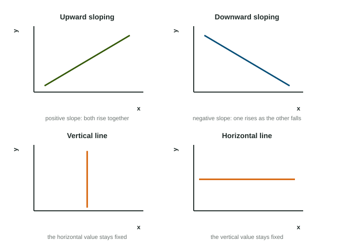

Slopes and Curve Shapes
Slope is rise over run, the change in the vertical value divided by the change in the horizontal value.
Part 1 · Hook
Why this matters
Part 2 · Before you start
What this builds on
Part 3 · Prerequisite check
Quick check before you start
1. On a graph, the ordered pair (20, 7) means
- 20 across on the horizontal axis and 7 up the vertical axis
- 20 up the vertical axis and 7 across
- a change of 20 followed by a change of 7
- the point halfway between 20 and 7
Show the answer
The horizontal value comes first, then the vertical value.
- Correct: 20 across on the horizontal axis and 7 up the vertical axis:
- 20 up the vertical axis and 7 across:
- a change of 20 followed by a change of 7:
- the point halfway between 20 and 7:
2. Two variables rise together. Their relationship is
- direct
- inverse
- unrelated
- reversed
Show the answer
A direct relationship means both rise or fall together.
- Correct: direct:
- inverse:
- unrelated:
- reversed:
Part 4 · See it
See it first

Part 5 · Step by step
How it works, step by step
- You pick two points on a lineyou can find the rise (change in the vertical value) and the run (change in the horizontal value)
- You divide the rise by the runyou get the slope, positive if the line rises and negative if it falls
- A line is vertical or horizontalone variable stays fixed while the other changes
- A curve bows outwardits slope changes along it, getting steeper as it falls
Part 6 · Key ideas
Key ideas
- Slope = rise over run = change in the vertical value divided by the change in the horizontal value.
- Upward sloping: positive slope, a direct relationship. Downward sloping: negative slope, an inverse relationship.
- A vertical line keeps the horizontal value fixed; a horizontal line keeps the vertical value fixed and has a slope of zero.
- A straight line has one slope everywhere; a bowed curve does not.
Part 7 · Misconception
A common mistake
The wrong idea: Slope is run over rise: how far across for each step up.
What actually happens: Slope is rise over run: the change in the vertical value divided by the change in the horizontal value. Flipping them gives the reciprocal, a different number.
Part 8 · Check yourself
Check yourself
Exam-style questions. Anything you miss goes into your review queue.
1. A straight line passes through the points (2, 8) and (6, 4). What is its slope?
Type a number. A four-function calculator is allowed, as on the exam.
Show the answer
Slope is rise over run:
- Answer: -1
2. A line on a graph rises from left to right. What is true of its slope?
- It is negative
- It is positive
- It is zero
- It is undefined
Show the answer
Rising to the right means the vertical value grows as the horizontal value grows: a positive slope.
- It is negative: A negative slope falls from left to right.
- Correct: It is positive: Right: both values rise together.
- It is zero: A zero slope is a flat line.
- It is undefined: Rise over run gives a number for any straight line that is not vertical.
3. On a graph with price on the vertical axis and quantity on the horizontal axis, a curve is a vertical line at a quantity of 50. What does it show?
- The quantity is 50 at every price
- The price is 50 at every quantity
- Quantity rises as price rises
- Quantity falls as price rises
Show the answer
A vertical line keeps the horizontal value fixed, so the quantity stays at 50 whatever the price.
- Correct: The quantity is 50 at every price: Right: the horizontal value never changes along a vertical line.
- The price is 50 at every quantity: That would be a horizontal line at a price of 50.
- Quantity rises as price rises: That would be an upward-sloping curve.
- Quantity falls as price rises: That would be a downward-sloping curve.
4. A straight line and a curve that bows outward both run from the vertical axis down to the horizontal axis. How do their slopes differ?
- Both have the same slope at every point
- The line gets steeper as it moves right; the bowed curve does not
- The line's slope is the same at every point; the bowed curve gets steeper as it moves right
- The bowed curve has a positive slope and the line a negative slope
Show the answer
A straight line has one slope everywhere. A curve bowed outward starts flat and grows steeper as it falls toward the horizontal axis.
- Both have the same slope at every point: Only a straight line keeps one slope; the bowed curve changes.
- The line gets steeper as it moves right; the bowed curve does not: This reverses them.
- Correct: The line's slope is the same at every point; the bowed curve gets steeper as it moves right: Right: constant for the line, steeper and steeper for the bowed curve.
- The bowed curve has a positive slope and the line a negative slope: Both fall from left to right, so both slopes are negative.
5. Place point X on the upward-sloping curve at a higher price than the marked starting point.
Work on the graph (it needs JavaScript), then check.
Show the answer
Along an upward-sloping curve, a higher price goes with a larger quantity: X sits up and to the right on S.
- Key: see the explanation
6. Place point X on the downward-sloping curve at a larger quantity than the marked starting point.
Work on the graph (it needs JavaScript), then check.
Show the answer
Along a downward-sloping curve, a larger quantity goes with a lower price: X sits down and to the right on D.
- Key: see the explanation
Part 9 · Summary
Summary
Part 10 · Up next
What comes next
Part 11 · Connections